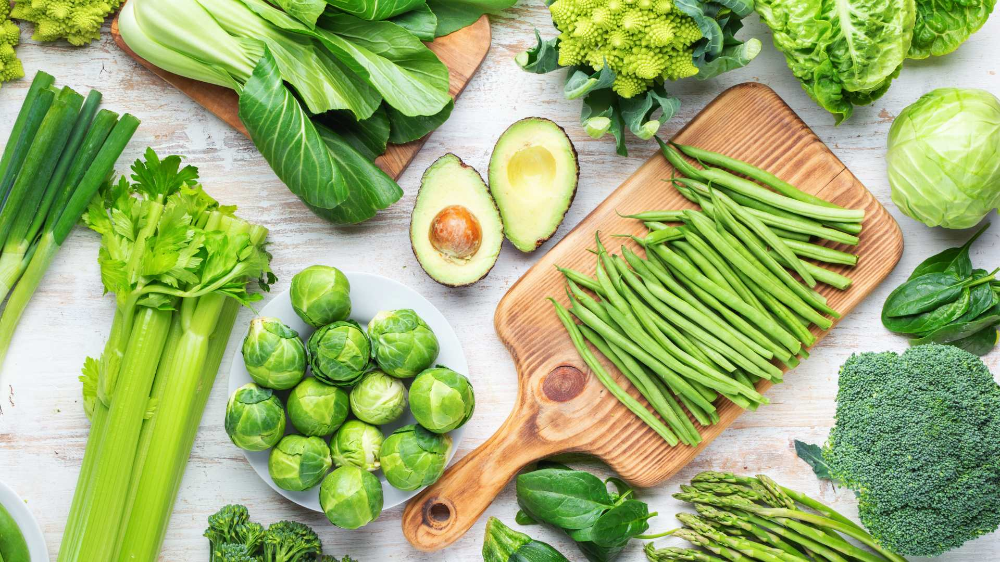
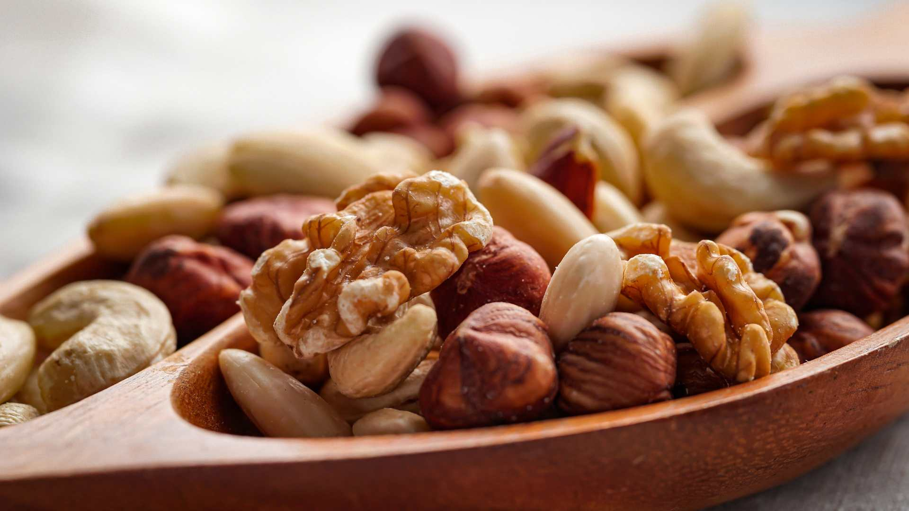
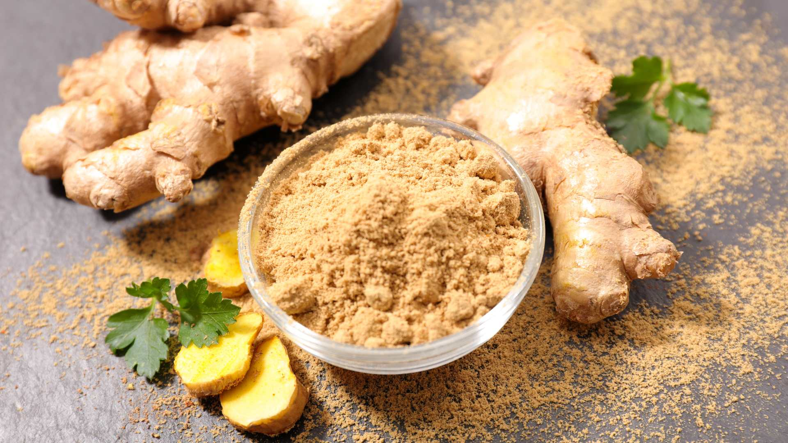
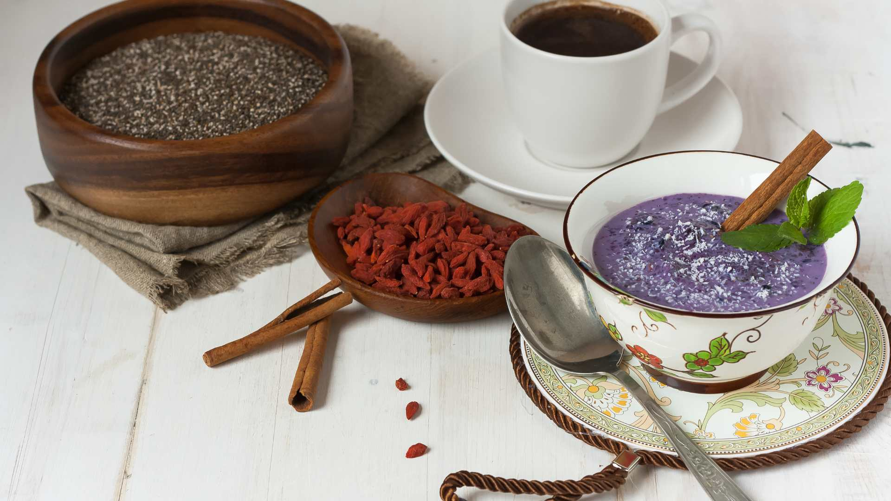

Energie für den Körper: welche Lebensmittel machen wach und fit?
Körper und Geist
Ernährung
Lifestyle
Schluss mit Ermüdungsfrust! Natürlicher Energie-Boost mit leckeren Lebensmitteln. In unserer schnelllebigen
Leistungsgesellschaft voller Stress und Zeitdruck bleiben Entspannungs- und Erholungsphasen nicht selten auf der
Strecke. Dabei gibt es einige unterstützende Wachmacher, die viel gesünder sind und die wir allzu oft gar nicht auf
dem Schirm haben.
Nährstoffe und Wirkung energieerzeugender Lebensmittel
Im hektischen Alltagsstress stopfen wir uns permanent mit zuckerhaltigen Fertiglebensmitteln und ungesunden Wachmachern zu, in der
Annahme, diese würden uns neue Power verleihen und unseren inneren Antriebsmotor auftanken. Weit gefehlt.
Denn Tatsache ist, dass viele Produkte künstlich erzeugt oder während ihres Transports mit künstlichen Stoffen versetzt wurden, um sie
länger haltbar und verkäuflich zu machen. Der negative Effekt hiervon sind Allergien, Unverträglichkeiten und erst recht Müdigkeit.
Dauerhaft laufen Körper und Geist auf Hochtouren, Zeit zum Energietanken bleibt kaum noch übrig.
Die Müdigkeit, die zwangsläufig im Verlaufe eines vollgepackten Tages entsteht, versuchen wir dann oft mit übermäßigem Kaffeekonsum
einzudämmen .Die gewünschte Wirkung, schnell wieder den Akku aufzuladen, verpufft am Ende und bewirkt genau das Gegenteil. Dabei
gibt es einige unterstützende Wachmacher, die viel gesünder sind und die wir allzu oft gar nicht auf dem Schirm haben.
Die wichtigsten Inhaltsstoffe für den Energiehaushalt
Der Körper benötigt zum Funktionieren und Energietanken vor allem Kohlenhydrate, Fette und Proteine. Dabei zählen Kohlenhydrate zu
den wichtigsten Energielieferanten überhaupt, weil sie die Gehirnaktivität antreiben und deswegen als unverzichtbare Energiequelle
gelten. Sie kommen als Zucker oder Stärke vor. Unterschieden wird zwischen guten und schlechten Kohlenhydraten. Gute Kohlenhydrate
beziehen wir unter anderem aus Kartoffeln, Hülsenfrüchten und Vollkornprodukten.
Fette gelten ebenfalls als Hauptenergielieferanten. Sie liefern Energie, die in Fettdepots gespeichert wird. Es gibt ungesunde Fette, die
gesättigte Fettsäuren enthalten. Diese finden sich zum Beispiel in Produkten mit Palmöl oder in vielen Käseprodukten. Gesunde Fette
wiederum sind reich an ungesättigten Fettsäuren, die in Olivenöl, Fisch oder Nüssen enthalten sind.
Eiweiße oder Proteine bestehen aus lebensnotwendigen Aminosäuren, die wiederum den Stoffwechsel bestimmen und an etlichen
Prozessen im Körper beteiligt sind. Sie werden schnell verwertet.
ANDERE WERTVOLLE NÄHRSTOFFE - VITAMINE UND MINERALSTOFFE
Vitamine dienen der Energiegewinnung. Sie stärken das Immunsystem und sorgen für einen reibungslosen Zellaufbau. Auch für Zähne und
Knochen sind sie unverzichtbar. Sie steuern viele Funktionen im Körper. Vitamine finden sich vor allem in frischem Gemüse und Obst,
besonders empfehlenswert ist grünes Gemüse.

Ohne Mineralstoffe geht nichts. Sie sind lebensnotwendig für die Prozesse im Körper. Kalium ist für die Konzentration und die
Energiegewinnung gut. Magnesium ist nützlich für die Leistungsfähigkeit und eine stabile Kondition. Jod hilft, um die körperliche und
geistige Leistungsfähigkeit zu stärken. Und Zink ist gut für die grauen Zellen.
Die Top 10 energiespendender Lebensmittel
Zu den Klassikern unter den Wachmachern gehören immer noch koffeinhaltige Getränke wie Kaffee und Energy Drinks oder zuckerhaltige
Süßigkeiten. Für die Gesundheit förderlich sind diese Energiespender allerdings nicht. Deswegen suchen viele lieber nach gesünderen
Alternativen, die ähnliche oder sogar bessere Effekte erzielen können. Wir haben die Top 10 der natürlichen Lebensmittel, die wach machen.
Der energiespendende Pausensnack - Die Banane
Sie ist das Non plus Ultra unter den Wachmachern, denn die Banane verleiht innerhalb kürzester Zeit einen absoluten Energieschub. Ihrem
hohen Gehalt an Kohlenhydraten und Kalium sei Dank. Die Banane ist das ideale Powerfutter für Hänger zwischendurch und allemal
besser als jeder Schokoriegel, denn in ihr stecken auch noch reichlich Vitamin C.
Knackiger Knabberspaß - Nüsse
Nüsse sind zwar klein, aber in ihrer Wirkung fein. Sie sind echte Antreiber für ausgelaugte Hirne. Wegen ihrer wertvollen ungesättigten
Fettsäuren sind sie extrem gesundheitsfördernd und die optimalen Wachmacher zur Stärkung ermüdeter grauer Zellen. Auch mit
Vitaminen, Mineralien und Eiweiß sparen einige Nusssorten nicht. Schon eine Handvoll Walnüsse, Mandeln oder Pistazien kann zügig
wieder ermüdete Geister wach machen.

Sauer macht stark - Zitrone, Grapefruit und Orange
Zitrusfrüchte sind wahre Vitaminbomben und können deshalb wahrhaftig Flügel verleihen. Sie sind belebend und erfrischend zugleich. Ihr
hoher Säuregehalt reizt den Organismus sofort und verleiht zudem einen puschenden extra Kick. Durch ihr reichlich enthaltenes
kostbares Vitamin C wird verloren gegangene Konzentration rasch wieder angekurbelt.
Entdecken Sie hier leckere und gesunde Smoothie-Rezepte!
Grünes Gold – Die Avocado
Die Avocado ist Träger vieler ungesättigter Fettsäuren und damit ein unglaublicher Energielieferant. Ihre vielen Vitamine und
Mineralstoffe versorgen den leer gelaufenen Akku in kürzester Zeit wieder mit reichlich Energie. Ob gelöffelt, püriert oder als Beilage im
Salat - Avocados beleben jeden ausgelaugten Körper.
Scharf, schärfer, Ingwer
Müdigkeit ade! Die Schärfe der gelben Knolle bewirkt wahre Wunder. Vor allem in der kalten Jahreszeit kann Ingwer vorbeugend gegen
Erkältungen verwendet werden. Als gesunder Energy Booster eignet er sich perfekt, weil er wegen seines hohen Gehalts an Vitamin C
und seiner vielen Mineralstoffe einen erlahmten Kreislauf wieder anregt und in Schwung bringt.

Kleiner Kern ganz groß - Kürbiskerne
Zu den top Energiespendern gehören definitiv Kürbiskerne. In ihnen stecken gesundheitsförderliche Omega-3-Fettsäuren und viel
pflanzliches Eiweiß. Sie geben Power und sind der ideale Knabbersnack für zwischendurch.
Das Geheimnis vom Ei
Besonders als sättigendes Frühstück können Eier helfen, fit in den Tag zu starten und den täglich benötigten Energieschub zu liefern. Die
Nährstoffe von Eiern beeinflussen die Hirnzellen positiv und sorgen so für eine lange Leistungsfähigkeit.
Von Beeren und Samen: Superfood
Ob Chiasamen, Goji-Beeren oder einfach fruchtige Blaubeeren, es bleibt dabei: Superfood bleibt super wirksam. Gemischt mit
ballaststoffreichem Hafer und fettarmem Naturjoghurt sorgen sie dafür, dass wir zu Hochleistungen fähig sind. Goji-Beeren vertreiben
Ermüdung, die winzigen Chia Samen steigern die Leistungsfähigkeit des Gehirns und Blaubeeren tanken mit ihrem hohen
Fruchtzuckergehalt schnell den Energiehaushalt wieder auf.

Flüssigkeit en masse: Trinken, trinken trinken!
Wasser sorgt für den unaufhaltsamen Fluss des Lebens. Auch in unserem Körper. Wer ausreichend und viel trinkt, scheidet Schadstoffe
aus und hält seinen Organismus aktiv und konstant am Laufen. So bleibt der Körper dauerhaft leistungsfähig und Mattheit tritt durch
eventuelle Dehydration gar nicht erst ein.
Lady in Black – Dunkle Schoko
Gute Nachrichten für alle Naschkatzen: Schokolade macht nicht ausschließlich dick und träge, sie kann auch puschen. Wenn es die richtige
ist. Dabei gilt: Je dunkler die Schokolade und je höher ihr Kakao-Anteil, desto besser. Denn Kakao wirkt durchblutungsfördernd und macht wach.
Auf Bekömmlichkeit und Vitalität setzen
Besonders die nährstoffreichen Lebensmittel sind es, die uns Energie verleihen und gleichzeitig gesundheitsfördernd sind. Sie haben oft
eine entzündungshemmende, entgiftende sowie reinigende Wirkung, können Krankheiten vorbeugen und zu einer zügigen Genesung des
Körpers beitragen. Für Phasen von Übermüdung und Unkonzentriertheit ist längst nicht Koffein das Allheilmittel. Wer auf verträgliche,
gesunde und vitalisierende Lebensmittel setzt, tut Körper und Geist langfristig einen Gefallen und bleibt länger munter.